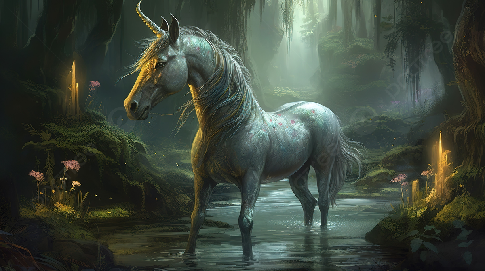
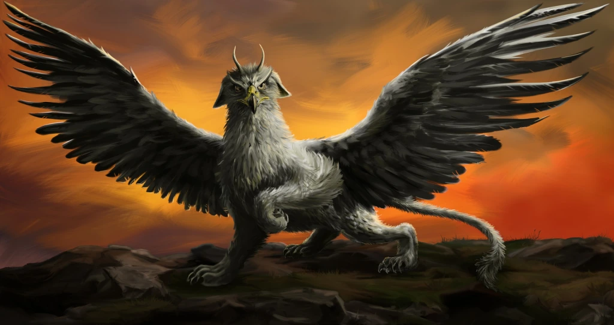

Dragons are legendary creatures, typically with
serpentine or otherwise reptilian traits, that feature
in the myths of many cultures. They are known for their
ability to fly and breathe fire.

Meet The Fantastic Unicorn
Unicorns are mythical creatures often depicted as a
white horse-like or goat-like animal with a single
large, spiraling, pointed horn protruding from its
forehead. They are known for their purity and grace.

Meet The Fantastic Beasts: Griffin
Griffins are legendary creatures with the body, tail,
and back legs of a lion and the head and wings of an
eagle. They are known as powerful and majestic guardians
of treasures, sacred sites, and divine animals.